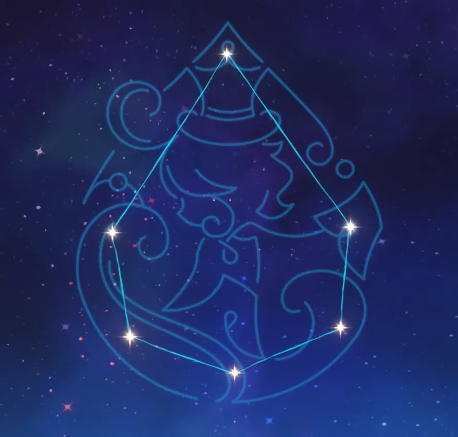
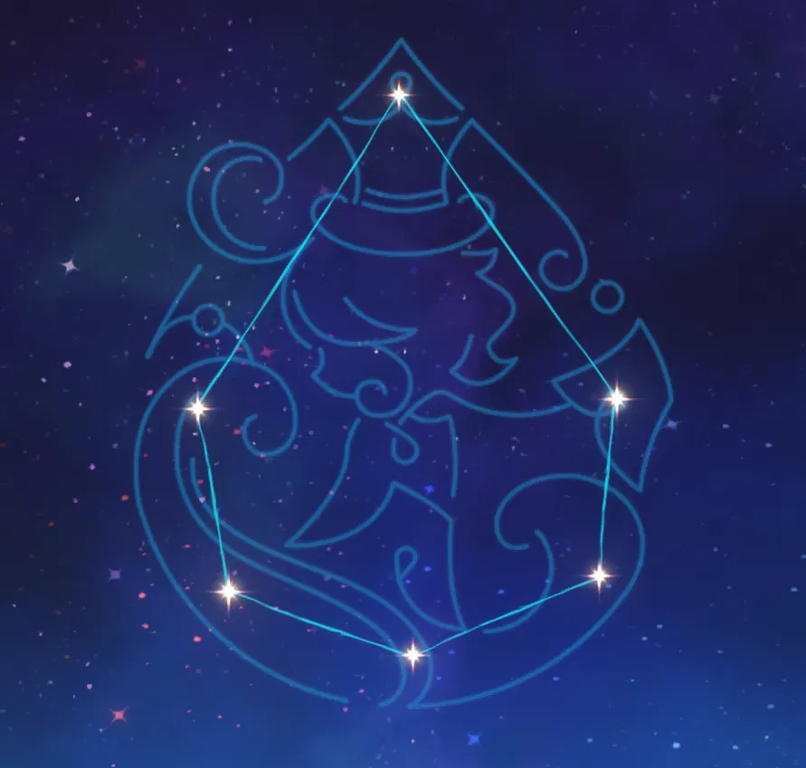
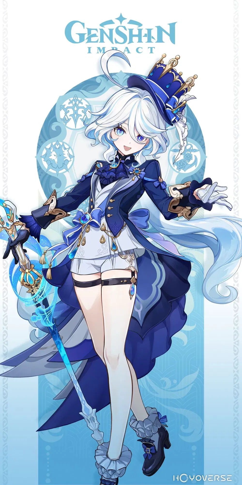
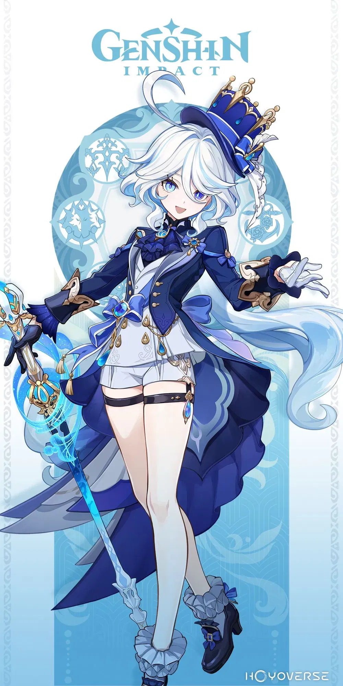

El foco de atención absoluto del escenario durante los juicios, hasta que la obra termina y el público rompe a aplaudir.

Atributos
.png)
Nombre
Constelación
Visión
Chino CV
Japonés CV
Plato especial
Furina
Animula Choragi
Hydro
钱琛 (Qian Chen)
水瀬 いのり (Inori Minase)

Cumpleaños
Título
Afiliación
Inglés CV
Coreano CV
Versión de lanzamiento
13/10
La Bailarina Incansable
Fontaine
Amber Lee Connors
김하영 (Kim Ha-Young)
4.2
Galeria
Tarjeta

 

 - copia.png) 

Vestimenta original - Prima donna coronada
Modelo de vestimenta de Furina. Cuando se levanta el telón, se observa el brillo que desprende esta gran celebridad. Su atuendo adornado con unas espléndidas gemas no es más que una forma de resaltar la grandiosidad de su persona.
Talentos

Ataque Normal: Convite de la solista
Ataque Normal
Realiza hasta 4 ataques consecutivos.
Ataque Cargado
Consume cierta cantidad de Aguante para liberar una danza en solitario que inflige Daño Físico a los enemigos cercanos y cambiar el tipo de arjé de Furina. Si en el campo de batalla están los miembros del salón o el juglar de las aguas invocados con la Habilidad Elemental, “Salón Solitaire”, se cambiará de unos a otros.
Arjé: sacralidad y secularidad
Cada cierto tiempo, cuando Furina golpea a un objetivo con su Ataque Normal, en la ubicación golpeada se libera una espina halitoespiritual o un filo fluyente que inflige Daño Hydro cargado de energía pneuma u ousía dependiendo del tipo de arjé actual. Cuando Furina entra en el campo de batalla, su tipo de arjé es ousía.
Ataque Descendente
Se lanza desde el aire para golpear el suelo, dañando a los enemigos cercanos e infligiendo Daño en el AdE en el momento del impacto.

Salón Solitaire
Convida a los huéspedes del Salón Solitaire para que se unan al equipo y aviven el espectáculo de Furina. En función del tipo de arjé actual de Furina, convidará a los miembros del salón o al juglar de las aguas.
Ousía
Esparce un festín de burbujas que infligen
Pneuma
Invoca al juglar de las aguas para que cada cierto tiempo restaure Vida a los personajes en uso cercanos en función de la Vida Máx. Los miembros del salón y el juglar de las aguas comparten su duración, y cuando Furina cambie entre uno u otro utilizando su Ataque Cargado, el huésped al que se cambió heredará la duración del anterior. Furina podrá moverse sobre el agua mientras los miembros del salón o el juglar de las aguas están activos. El Salón Solitaire de Furina tiene unos clientes fijos. El resto del tiempo, son el Gentilhombre Usher, Madame Chevalmarine y Mademoiselle Crabaletta quienes lo visitan, excepto los miércoles melancólicos, que le toca venir al juglar.

¡Que el mundo entero festeje!
Concentra un gran júbilo para crear un escenario de agua y espuma que inflige
“¡Festejen! ¡Aclamen! ¡Maravíllense! ¡Alcen sus copas! Cada noche sin banquete es un sórdido desperdicio de dolorosa y sobria luz diurna... Oh, ehmm... Y quienes aún no sean mayores de edad, ¡que tomen jugo de uva!”.
Confesión inaudible
Por cada 1000 pts. de Vida Máx. que tenga Furina, la habilidad Salón Solitaire de los diferentes tipos de arjé de Furina obtiene distintas bonificaciones: El daño de los miembros del salón aumenta en un 0.7%. Su daño puede aumentar hasta un 28% de esta manera. El intervalo de tiempo en el que el juglar de las aguas restaura Vida a los personajes en uso cercanos se reduce en un 0.4%. Este intervalo de tiempo se puede reducir hasta un 16% de esta manera.
Vals irrefrenable
Cuando el personaje en uso del equipo recibe curación, si la curación no procede de Furina y, además, tenía la Vida al máximo, durante los próximos 4 s Furina restaurará Vida a los personajes cercanos del equipo cada 2 s en una cantidad equivalente al 2% de la Vida Máx. de dichos personajes.
El mar es mi escenario
Reduce en un 30% el TdE de las habilidades de los Engendros Fontamarinos cromáticos.
Constelación

El amor es como un pájaro rebelde
Al usar ¡Que el mundo entero festeje! , Furina obtiene 150 pts. de algarabía. Además, el máximo de puntos de algarabía que Furina puede poseer aumenta en 100 pts.
.png)
Una mujer cambiante como el agua
Mientras la habilidad ¡Que el mundo entero festeje! está activa, Furina obtiene un 250% más de puntos de algarabía con el aumento o disminución de la Vida de los personajes cercanos del equipo. Por cada punto de algarabía más allá del límite máximo, la Vida Máx. de Furina aumenta en un 0.35%, hasta un máximo de un 140%.

Escondo secretos que nadie conoce
Aumenta el nivel de habilidad de ¡Que el mundo entero festeje! +3. Puede ser aumentado hasta Niv. 15.

Vive el infierno y apreciarás la vida
Furina obtiene 4 pts. de Energía Elemental cuando los miembros del salón de Salón Solitaire golpean a un enemigo o cuando el juglar de las aguas restaura Vida a los personajes en uso cercanos. Este efecto solo se puede activar una vez cada 5 s.

Ahora sé su nombre, y es...
Aumenta el nivel de habilidad de Salón Solitaire +3. Puede ser aumentado hasta Niv. 15.

¡Escuchen mis alabanzas y alcemos nuestras copas de amor!
Al usar Salón Solitaire , Furina obtiene el efecto de “atención del pueblo” durante 10 s. Mientras este efecto está activo, el daño de los Ataques Normales, Cargados y Descendentes de Furina se transforma en Daño Hydro, el cual no puede sustituirse imbuyéndose de otro elemento. Además, el daño que inflige con dichos ataques aumenta en una cantidad equivalente al 18% de su Vida Máx. Mientras el efecto de atención del pueblo está activo, cada 0.1 s, cuando Furina golpea a un enemigo con un Ataque Normal (esto no incluye los ataques de arjé: sacralidad y secularidad), Cargado o Descendente, se producen distintos efectos dependiendo de su tipo de arjé actual:
Arjé: ousía
Restaura Vida cada segundo a todos los miembros del equipo cercanos en una cantidad equivalente al 4% de la Vida Máx. de Furina durante 2.9 s. Activar esto repetidamente prolongará la duración del efecto.
Arjé: pneuma
El daño del siguiente Ataque Normal (esto no incluye los ataques de arjé: sacralidad y secularidad), Cargado o Descendente aumenta adicionalmente en una cantidad equivalente al 25% de la Vida Máx. de Furina. Al golpear a un enemigo con alguno de dichos ataques, todos los miembros del equipo cercanos perderán un 1% de su Vida actual.
Los efectos anteriormente mencionados se pueden activar hasta 6 veces a lo largo de la duración de atención del pueblo, y se eliminarán cuando se haya alcanzado ese número de veces o cuando termine su duración.
Media
Anuncio del Personaje

09/25/2023
Las mentiras nacen para cubrir otras mentiras, y la justicia aguarda al final de todas ellas. El ignorante se ríe de ello, pues no es más que una farsa... hasta que descubre el origen de todo y se da cuenta de que él fue el primero en mentirse a sí mismo.
— Una fábula inconexa que la bruja "N" dejó en el sueño de alguien.
HoYoLAB:
https://www.hoyolab.com/article/21858342
Youtube
Festejando el gran final
07/03/2023
Disfruta de una aria de vocablos invertidos,
de la armoniosa danza de exultante infortunio,
de un mágico espectáculo vacuo de ovaciones...
El elenco sale a escena, el público toma asiento.
Disfrutemos del espectáculo hasta que se cierre el telón.
HoYoLAB:
https://www.hoyolab.com/article/19771514
YouTube:
https://www.youtube.com/watch?v=9SbgmM3mSps
«Una llovizna inesperada»
08/04/2023
La ciudad está cubierta por una ligera llovizna, como si de niebla se tratara.
Si la magia no depende de los trucos, solo queda disfrutar del espectáculo.
¿Por qué llorar sin motivo, si la farsa solo pretende ser sincera?
YouTube:
https://www.youtube.com/watch?v=1hJ5J5QiyIY
«Hacia las estrellas del abismo marino»
09/15/2023
Secretos enterrados en la historia y en lo más profundo de las aguas.
Hasta que alguien los revele y alguien regrese sobre las olas.
HoYoLAB:
https://www.hoyolab.com/article/21642700
YouTube:
https://www.youtube.com/watch?v=i7wgl1v1_5M
«Mascarada de los culpables»
11/03/2023
"Ahora que mi magia se ha consumido,
oh, gran juez, ¡levanta las cadenas de mi alma!
No vuelvas a encerrarme en esta isla solitaria.
Te ofrezco mi último rayo de esperanza".
YouTube:
https://www.youtube.com/watch?v=1Ip43DfbkUw
Furina: Miembro del reparto
11/05/2023
"En el mundo real, hemos visto muchas flores destinadas a marchitarse, lluvias inevitables, barcos hundidos de tiempos lejanos...
Pero más allá de toda esa inalterabilidad, pienso que debe haber alguien que crea...
Que la humanidad puede controlar el destino, por lo menos en el teatro".
YouTube:
https://www.youtube.com/watch?v=aau-c8l5z9c
Furina: El mundo es un teatro
11/07/2023
Le monde n'est qu'une scène.
Il vaut mieux rire que pleurer,
car le rire est le propre de l'homme.
Riez de tout cela, ne vous inquiétez pas.
Profitons d'aujourd'hui.
Idea general de la letra:
El mundo no es más que un teatro.
Es mejor actuar riendo que llorando
pues reír es propio de los humanos.
Riamos felizmente y, sin alguna preocupación
disfrutemos del día de hoy.
YouTube:
https://www.youtube.com/watch?v=EN79SfbcvIE/p>
Furina: Reflejo en el espejo
11/08/2023
Para conectar con su público, los actores deben empezar por sumergirse en su papel.
Esto requiere un talento extraordinario e innumerables entrenamientos hasta el punto en que, cuando se miran al espejo, no se encuentran ningún defecto.
YouTube:
https://www.youtube.com/watch?v=bu2lCHmVV0w
La vaguelette
11/09/2023
Las luces del mundo se reflejan en el lago y su anhelo formula ondas en las tranquilas aguas. Si el precio es simplemente la soledad, entonces permite que este deseo fluya sin control... Que fluya en el mundo que ella contempla y en su mirada tan clara como un lago.
Ah, si je pouvais vivre dans l'eau, le monde serait-il plus beau ? Nous pardonneras-tu, ô chère mère ? L'eau dans son courant fait danser nos vies. Et la cité, elle nourrit. Ainsi que toi, mon doux amour. Non, le grand amour ne suffit pas. Seul un adieu fleurira. C'est notre histoire de vie, douce et amère. Moi, je suis et serai toujours là, à voir le monde et sa beauté. Et ça ne changera jamais, jamais...
YouTube:
https://www.youtube.com/watch?v=kglEsR7bqAY
El final de la pecadora
11/17/2023
Tras presenciar innumerables juicios, finalmente llegó el que ella esperaba, como si de una obra de teatro se tratara.
Una espada gigante de energía congregada taja el telón, y la danza de la pecadora acoge su nota final.
YouTube:
https://www.youtube.com/watch?v=_RAhrisU6Mc
El susurro del agua - Detrás de la creación de «La vaguelette»
11/29/2023
"El fluir del agua nos hace bailar, y le da vida a nuestra ciudad. Y a ti, querida mía".
Furina representa otra "historia" jamás contada en un teatro ficticio.
Sigue los pasos del equipo de producción de Genshin Impact a través del proceso de creación de «La vaguelette».
YouTube:
https://www.youtube.com/watch?v=cP_PnRxK-nc
«Rosas y mosquetes»
12/08/2023
Al levantarse el telón del Festival Fontinal Kinográfico, parece que todo el mundo está en sus puestos: el director, el productor, el director artístico, incluso los actores... Ahora depende de todos ustedes hacer que los mosquetes disparen en el momento adecuado y que las rosas florezcan en el momento oportuno.
YouTube:
https://www.youtube.com/watch?v=Z1SK-G1B6rY
Cameos
Neuvillette: El cauce de las aguas
09/26/2023
Cada turbulencia en el flujo de las aguas se mezcla con sentimientos encontrados.
¿Habrá alguien que recoja parte de ella cuando esta se calme?
YouTube:
https://www.youtube.com/watch?v=v2QSNQXRSkE
Wriothesley: Nuevas normas vigentes
10/17/2023
Nadie imaginó jamás que el viejo fuerte de muros de hierro y bronce pudiera acoger un nuevo orden.
Me limitaré a comentarte el apunte más importante: acuérdate de obtener tu comida de comedor una vez al día de forma gratuita.
YouTube:
https://www.youtube.com/watch?v=lZqHPOPA-T0
Narval Devoraestrellas
11/15/2023
El narval gigante que se suponía que estaba a la deriva entre las estrellas ha aparecido, perseguido y atacado por una figura familiar a la que no se había visto en mucho tiempo.
El sonido emitido por el narval es como un lamento, señal de que la profecía se está cumpliendo paso a paso...
YouTube:
https://www.youtube.com/watch?v=0wj5pxhk4JE
«Los colores de la primavera»
01/29/2024
La primavera ha llegado pronto y, con su llegada, emerge una bestia auspiciosa con la mirada fijada en las nubes. Remontando el vuelo como grullas salvajes, las cometas de colores ascienden al cielo, mientras un arroyo fluye de vuelta al valle que tantos tesoros oculta.
YouTube:
https://www.youtube.com/watch?v=zQk1QHm2-Cw
«Un interminable sueño entrelazado»
05/24/2024
La gente a menudo se siente atrapada por el pasado.
Todos esos remordimientos no resueltos
y todas esas preguntas sin respuesta,
quizá llegue un día en que se pongan en su sitio
o quizá solo puedan repetirse una y otra vez en sueños.
YouTube:
https://www.youtube.com/watch?v=qqnEjmnitgc
Artes Oficiales

Fondo de Pantalla versión 4.0

Arte Oficial 3rd Aniversario

Fondo de Pantalla versión 4.1

Fondo de Pantalla versión 4.1

Fondo de Pantalla versión 4.2

Fondo de Pantalla versión 4.2

Fondo de Pantalla versión 4.3

Astra Carnival Cat's Tail Gathering 2024 S4

Festival de Sevilla 2024

Ilustración de personaje

Furina y Charlotte - Ilustración de personaje
Stickers
.png)